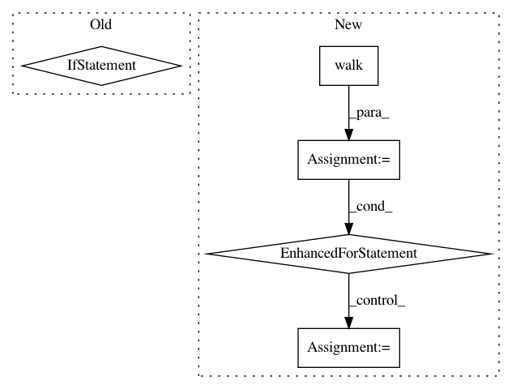

906771bf319aa1c5c680638d566b352c63cf6ab2,data/utils.py,,create_manifest,#Any#Any#Any#,16
Before Change
with os.popen("find %s -type f -name "*.wav"" % data_path) as pipe:
for file_path in pipe:
file_paths.append(file_path.strip())
if ordered:
print("Sorting files by length...")
def func(element):
output = subprocess.check_output(
["soxi -D %s" % element.strip()],
shell=True
)
return float(output)
file_paths.sort(key=func)
with io.FileIO(manifest_path, "w") as file:
for wav_path in file_paths:
transcript_path = wav_path.replace("/wav/", "/txt/").replace(".wav", ".txt")
sample = os.path.abspath(wav_path) + "," + os.path.abspath(transcript_path) + "\n"
After Change
def create_manifest(data_path, tag, ordered=True):
manifest_path = "%s_manifest.csv" % tag
file_paths = []
wav_files = [os.path.join(dirpath, f)
for dirpath, dirnames, files in os.walk(data_path)
for f in fnmatch.filter(files, "*.wav")]
size = len(wav_files)
counter = 0
for file_path in wav_files:
file_paths.append(file_path.strip())
counter += 1
_update_progress(counter / float(size))
print("\n")
if ordered:
_order_files(file_paths)
counter = 0
In pattern: SUPERPATTERN
Frequency: 3
Non-data size: 5
Instances
Project Name: SeanNaren/deepspeech.pytorch
Commit Name: 906771bf319aa1c5c680638d566b352c63cf6ab2
Time: 2017-02-16
Author: seannaren@hotmail.com
File Name: data/utils.py
Class Name:
Method Name: create_manifest
Project Name: explosion/thinc
Commit Name: 3b1a08a1be0353bed8c77f96ee2145e87765c688
Time: 2020-01-24
Author: honnibal+gh@gmail.com
File Name: thinc/model.py
Class Name:
Method Name: set_dropout_rate
Project Name: pantsbuild/pants
Commit Name: 2be0b1d843e77c0fa6e74f00689ece1911211721
Time: 2018-09-26
Author: nh@baroquebobcat.com
File Name: src/python/pants/backend/jvm/tasks/jvm_compile/rsc/rsc_compile.py
Class Name: RscCompile
Method Name: register_extra_products_from_contexts